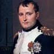

Napoleon Bonaparte
History is a set of lies agreed upon by the powerful, and in modern history the powerful happen to be the European Imperialists. A prominent example can be how Napolean is painted as a short barbarian by the Europeans when, the blood of innocents on their hands is unfathomable and there oppressions on the colonies sends a chill down the spine. By the way, for the record 5'6 was the average height for a french man in that era and their were aso some ambiguity between a british and a french feet.
Napoleon Bonaparte (1769-1821), also known as Napoleon I, was a French military leader and emperor who conquered much of Europe in the early 19th century. Born on the island of Corsica, Napoleon rapidly rose through the ranks of the military during the French Revolution (1789-1799). After seizing political power in France in a 1799 coup d’état, he crowned himself emperor in 1804. Shrewd, ambitious and a skilled military strategist, Napoleon successfully waged war against various coalitions of European nations and expanded his empire but, only after the europeans rejected his peace treaty. However, after a disastrous French invasion of Russia in 1812, Napoleon abdicated the throne two years later and was exiled to the island of Elba. In 1815, he briefly returned to power in his Hundred days campaign. After a crushing defeat at the Battle of Waterloo, he abdicated once again and was exiled to the remote island of Saint Helena, where he died at 51.
Did you know? In 1799, during Napoleon’s military campaign in Egypt, a French soldier named Pierre Francois Bouchard (1772-1832) discovered the Rosetta Stone. This artifact provided the key to cracking the code of Egyptian hieroglyphics, a written language that had been dead for almost 2,000 years.